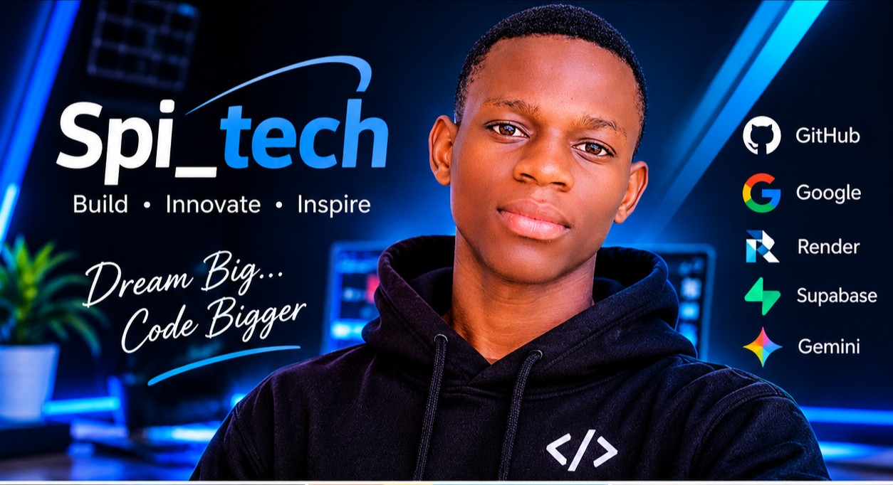

02 / PROJECTS
Ideas I'm
bringing to life.
A growing collection of experiments and learning projects. Each one is part of the process.
Spi_tech.
Spi_tech is my personal technology project. I'm using it to explore automation, conversational AI and software development while learning through building and testing.
It's a work in progress, and I'm continuing to improve how it understands messages, responds naturally and supports group interactions.
Find my work on GitHub ↗
SPI_TECH · BUILD, INNOVATE, INSPIREEARLY EXPERIMENT
WhatsApp
automation.
One of my first practical software experiments was building and deploying a basic WhatsApp bot focused on group administration.
It was an introduction to automation, bot behaviour and the process of taking an idea from a simple experiment to a deployed project.
MORE TO COME
This portfolio will grow as I do.
Project screenshots, development notes and new experiments will be added as they're ready to share.